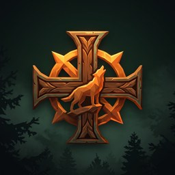

The game
The old balance is breaking. Velnias has stolen the sacred fire from the oak sanctuary of Romuva, and the barrier between the living world and Anapilis, the afterworld, is failing. The dead and the creatures of the swamps and forests pour through.
You play a champion chosen by the old gods. Your weapons strike on their own, so you spend your attention on where to stand, where to run and what to become. Every level-up offers a choice, every run builds a different champion, and between runs you make offerings in the Sacred Grove to earn lasting blessings.
Runs last up to 15 minutes, in three acts, and end with a boss.
What's inside
Three champions
Vaidilutė the priestess of Gabija, Karys the thunder warrior of Perkūnas and Medžiotojas the hunter of Medeina. Each has a weapon only they can learn.
Build crafting
Six weapon families and fourteen blessings. Max a weapon and pair it with the right passive, and a treasure chest evolves it into something new.
Folklore bestiary
Vėlės, kaukai, vilkatai, laumės, Liūnas, the Baubas and bosses such as Ragana, Vilkolakis Alpha, Girinis, Giltinė and Velnias.
Sacred Grove
Spend amber on blessings from six gods. They raise your stats in every run and unlock new champions.
A living glossary
Fifty in-game pages on the heroes, creatures, gods and treasures, with the folklore or history behind each and a turning 3D model.
Atmospheric world
Peat bog, oak groves and the amber coast, with mist, storms and a sky that slides from golden afternoon to dusk over a run.
Design principles
Instant fun
Start a run within seconds of opening the app. Movement is the only required input, and attacks fire automatically.
Power through choice
Every level-up should be an interesting decision. Synergies and evolutions should feel like discoveries, not menu chores.
Authentic myth
The folklore is the game's identity, not decoration: real deities, creatures, symbols and places, researched and treated with respect.
Short sessions, long goals
Runs suit a commute, and meta-progression gives a reason to come back tomorrow.
Fair free-to-play
Ads and purchases speed up progress but never gate the fun. Everything is earnable by playing, there are no loot boxes and no energy timers, and you can remove ads for good.
The world
The tone is a dark folk tale: eerie and atmospheric, never grimdark. In folklore Velnias is often a fool who gets outwitted, so there is room for a little humour.
Lithuania was the last pagan state in Europe, and the knightly orders campaigned against it for two centuries. Their invasions are a second front, drawing on real history such as the battles of Saulė (1236) and Durbė (1260) and the defence of Pilėnai (1336). The enemy is a medieval army, not a faith, and the old gods are shown as patrons and heroes. Baltic paganism is still practised today, so the symbols and names are handled with care.
Regions planned: the Sacred Forest and Bog and the Amber Coast are playable, with a Frozen Marsh, a Burning Hillfort and Anapilis itself to come.
Development journey
- 22 Oct 2026
Foundations
A vision, design principles and a roadmap written down before any code. A Godot 4.7 project set up for portrait phones with the Mobile renderer, with a first build running on a real Android phone.
- First playable
Greybox run
A capsule that moves, enemies that chase, an axe that swings, gems that level you up and a level-up choice screen. Grey boxes first, to find out whether it was fun before spending time on art.
- Content
Weapons, enemies and bosses
Six weapon families with evolutions, eight enemy behaviours (chasers, chargers, ranged laumės, splitting Liūnas, armoured warriors), elites that drop chests, and three-act runs ending in a boss.
- Meta
Menu, Grove and glossary
A full loop from menu to run to reward and back: amber, twelve blessings, hero unlocks, saved progress and a glossary of fifty folklore pages.
- Now · 31 Oct 2026
Art, audio and feel
Heroes modelled, rigged and animated in Blender. Music and sound effects built from instruments like the kanklės, skudučiai and frame drums, and a Baltic ornament drawn into every menu. Hit sparks, shadows, a day-to-dusk sky and a third champion, the hunter, with his own bow.
- Next
Playtesting and release
Tuning balance and performance on phones, more regions and champions, then a store release on Android and iOS.
Built with
Godot 4.7 and GDScript, with Jolt physics. Models are made in Blender, and the game's content is data-driven, with weapons, enemies, waves and blessings defined as editable resources. Music and effects are synthesised by my own scripts.